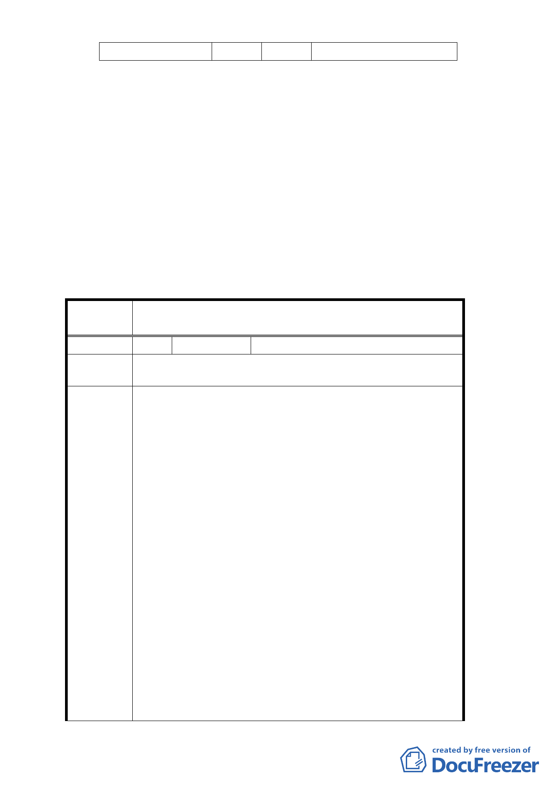

住宅區全街廓範圍
車站周邊商業活動。
四、 全案係市府101年11月29日府都規字第10135723000號公告公
開展覽並函送到會。
五、 公民或團體所提意見：計12件。
六、 申請單位：臺北市政府。
七、 法令依據：都市計畫法第27條第1項第3款辦理。
決議：
一、 本案依公展計畫書圖內容通過。
二、 「公民團體陳情意見」審決如後附綜理表。
臺北市都市計畫委員會公民或團體所提意見綜理表
案
名
變更臺北市中華路二段（愛國西路至汀洲路）兩
側住宅區為商業區主要計畫案
編 號1
陳情人 蔡金龍
陳情位置
萬華區和平西路二段 172 號
中正區中華路二段 91 號
我們是一群居住在台北市和平西路與臺北市中華路二
段兩側居民，早期是工業區，木材業及建材業林立，任何
行業都能進駐，相當熱鬧，車水馬龍，也是南北、東西要
道，有早期 1 路公車及 12 路公車行駛。
經馬路拓寬及興建和平高架橋造成衝擊，現已拆除但
當年說要補償兩側居民是空頭支票，91 年陳情（如附件
一）被列入萬華區的邊疆，過了中華路二段界線是中正區
，每次陳情都是通盤檢討到何年何月﹖中正萬華兩區等
24 年。
99 年陳情文又被中央都委會駁回理由很好笑！91 年將
陳情理由 和平西路馬路南側改為商業區，30 米和平西路北側不變
，不會包圍住宅區，99 年將艋舺大道 40 米以東中華路二
段改為商業區就會包圍住宅區，莫名其妙？！再陳情市議
員李仁人建議把被包圍住宅區也改為商業區，看都委會如
何再駁回，不會再說改商業區又包圍「龍山國中」，那「
福星國小」被西門町商業區包圍又如何解釋！福星國小被
包圍 30 年沒事，否則遷校。
91 年到 99 年再到 102 年陳情，市政府也公開展示及說
明會，也建議不只改為商業區，也要放寬建蔽率及容積率
，才能改造老舊區，就此擱筆，期待都委會召開能順利過
關！
- 18 -